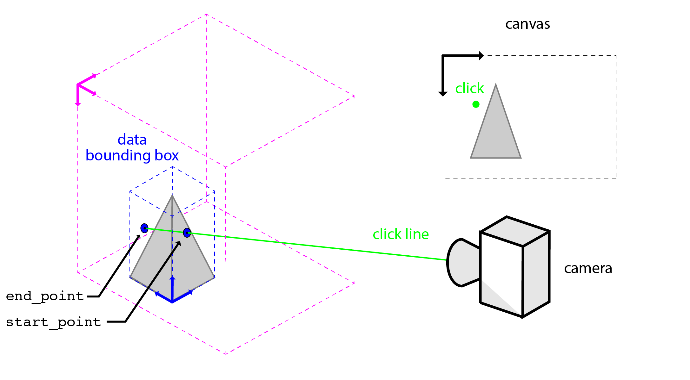

3D interactivity¶
Coordinate systems in napari¶
In napari, there are three main coordinate systems: (1) canvas, (2) world, and (3) layer. The canvas coordinates system is the 2D coordinate system of the canvas on which the scene is rendered. World coordinates are the nD coordinates of the entire scene. As the name suggests, layer coordinates are the nD coordinate system of the data in a given layer. Layer coordinates are specific to each layer’s data and are related to the world coordinate system via the layer transforms.

In 3D mode, clicks are lines¶
Since the 3D scene is rendered on a 2D surface (your screen), your mouse click does not map to a specific point in space. As the view is a parallel projection, napari can determine a line through 3D space that intersects the canvas where the user clicked.

When a user clicks or moves the mouse in the canvas, napari emits a mouse event with the following properties:
pos: the position of the click in canvas coordinates.
position: the position of the click in world coordinates. The point is located at the intersection of the click line (
view_direction) and a plane parallel to the camera plane (i.e,. a plane normal toview_direction).view_direction: a unit vector giving the direction of the camera in world coordinates.
dims_displayed: a list of the dimensions currently being displayed in the viewer. This comes from
viewer.dims.displayed.dims_point: the indices for the data in view in world coordinates. This comes from
viewer.dims.point.
Determining where the click intersects the data¶
Each napari layer has a method called get_ray_intersections() that will return the points on the data bounding box that a given line will intersect (start_point and end_point ). When the click line (view_direction) and position (position) are used as inputs, start_point and end_point are the end points of the segment click line that intersects the layer’s axis-alinged data bounding box. start_point is the end point that is closest to the camera (i.e, the “first” intersection) and end_point is the end point that is farthest from the camera (i.e., the “last” intersection). You can use the line segment between start_point and end_point to interrogate the layer data that is “under” your cursor.

See the get_ray_intersection() docstrings below for details. Note that if the line does not intersect the data bounding box (i.e., the click was outside of the data), start_point and end_point are None. The position and view_direction should be provided as world coordinates if world is set to True and in layer coordinates if world is set to False.
def get_ray_intersections(
self,
position: List[float],
view_direction: np.ndarray,
dims_displayed: List[int],
world: bool = True,
) -> Union[Tuple[np.ndarray, np.ndarray], Tuple[None, None]]:
"""Get the start and end point for the ray extending
from a point through the data bounding box.
Parameters
----------
position :
the position of the point in nD coordinates. World vs. data
is set by the world keyword argument.
view_direction : np.ndarray
a unit vector giving the direction of the ray in nD coordinates.
World vs. data is set by the world keyword argument.
dims_displayed :
a list of the dimensions currently being displayed in the viewer.
world : bool
True if the provided coordinates are in world coordinates.
Default value is True.
Returns
-------
start_point : Optional[np.ndarray]
The point on the axis-aligned data bounding box that the cursor click
intersects with. This is the point closest to the camera.
The point is the full nD coordinates of the layer data.
If the click does not intersect the axis-aligned data bounding box,
None is returned.
end_point : Optional[np.ndarray]
The point on the axis-aligned data bounding box that the cursor click
intersects with. This is the point farthest from the camera.
The point is the full nD coordinates of the layer data.
If the click does not intersect the axis-aligned data bounding box,
None is returned.
"""
Adding 3D interactivity via mouse events¶
Custom 3D interactivity can be added via mouse callbacks. The layer.get_ray_intersections() function has been designed to work seamlessly with the napari mouse callback event. You can pass the mouse callback event properties to layer.get_ray_intersections() get the start_point and end_point of where the click line intersects the layer data.
@layer.mouse_drag_callbacks.append
def on_click(layer, event):
# get the points where the click intersects the
start_point, end_point = layer.get_ray_intersections(
position=event.position,
view_direction=event.view_direction,
dims_displayed=event.dims_displayed,
world=True
)
if (start_point is not None) and (end_point is not None):
# use start_point and end_point to interrogate layer data
For an example implementation, see cursor_ray.py.
Getting the layer data under the cursor¶
There are convenience methods in the layer objects (layer.get_value()) to get the layer data value underneath the cursor that is “on top” (i.e., closest to start_point). Like layer.get_ray_intersections(), layer.get_value() takes the click position, view direction, dims_displayed in either world or layer coordinates (see world argument) as input. Thus, it can be easily integrated into a mouse event callback. Note that layer.get_value() returns None if the layer is not currently visible. See the docstring below for details.
def get_value(
self,
position,
*,
view_direction: Optional[np.ndarray] = None,
dims_displayed: Optional[List[int]] = None,
world=False,
):
"""Value of the data at a position.
If the layer is not visible, return None.
Parameters
----------
position : tuple
Position in either data or world coordinates.
view_direction : Optional[np.ndarray]
A unit vector giving the direction of the ray in nD world coordinates.
The default value is None.
dims_displayed : Optional[List[int]]
A list of the dimensions currently being displayed in the viewer.
The default value is None.
world : bool
If True the position is taken to be in world coordinates
and converted into data coordinates. False by default.
Returns
-------
value : tuple, None
Value of the data. If the layer is not visible return None.
Progress on the implementation of layer.get_value() can be found at #3187. Layers for which this is not yet implemented will return None if layer.get_value() is called whilst the viewer is in a 3D rendering mode.